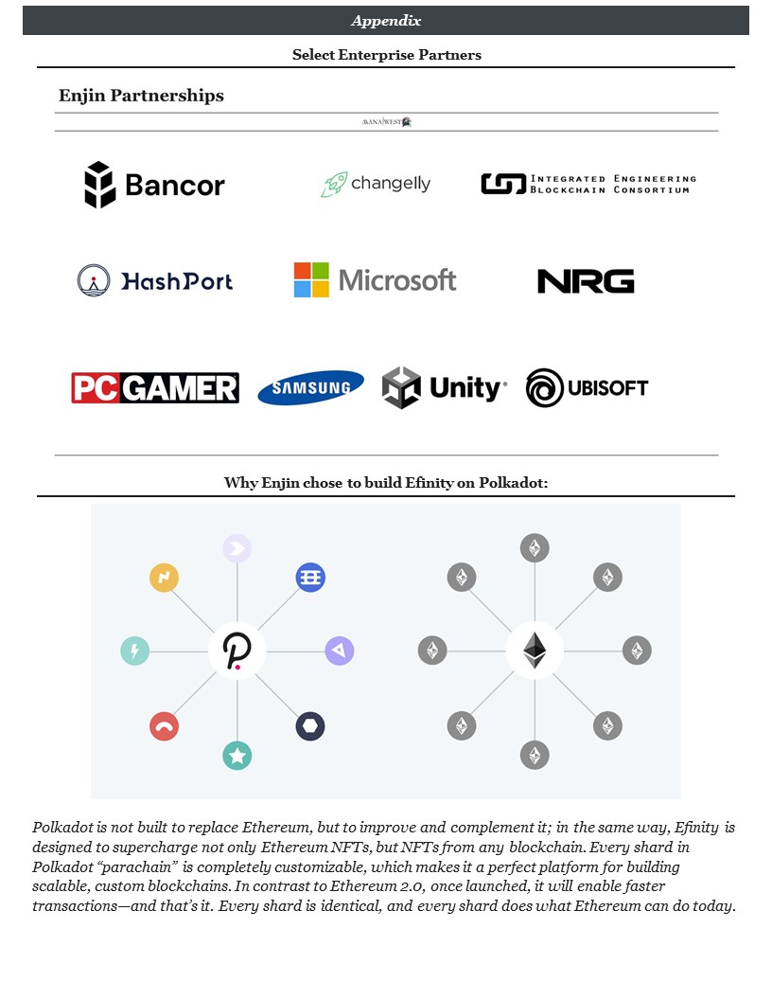
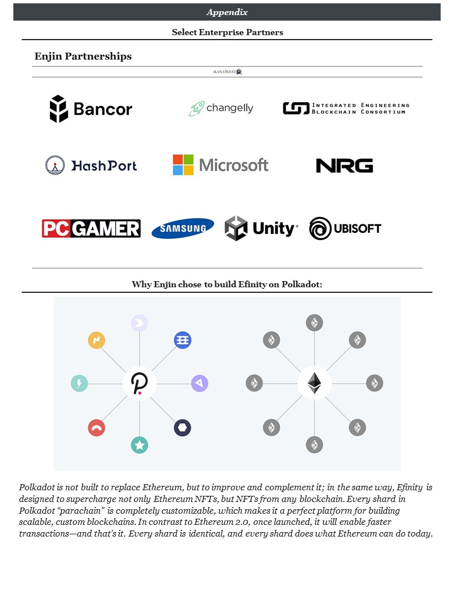
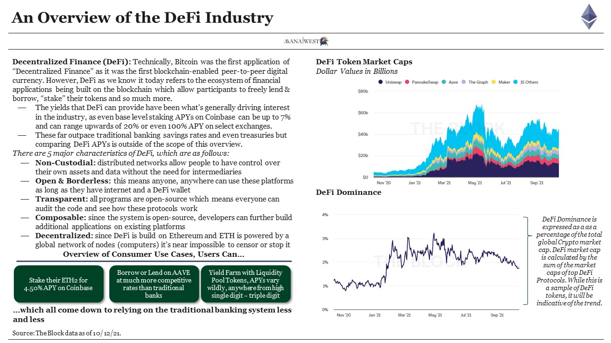
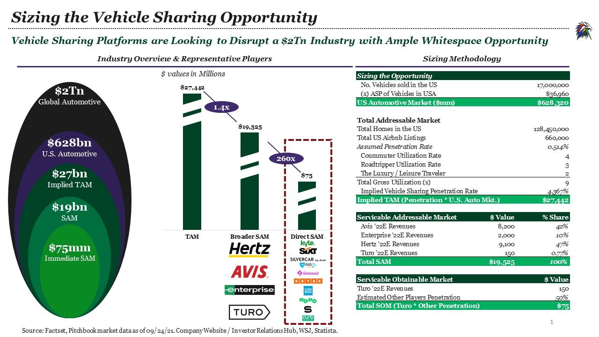
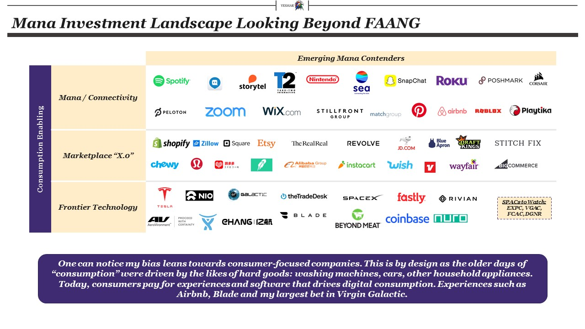
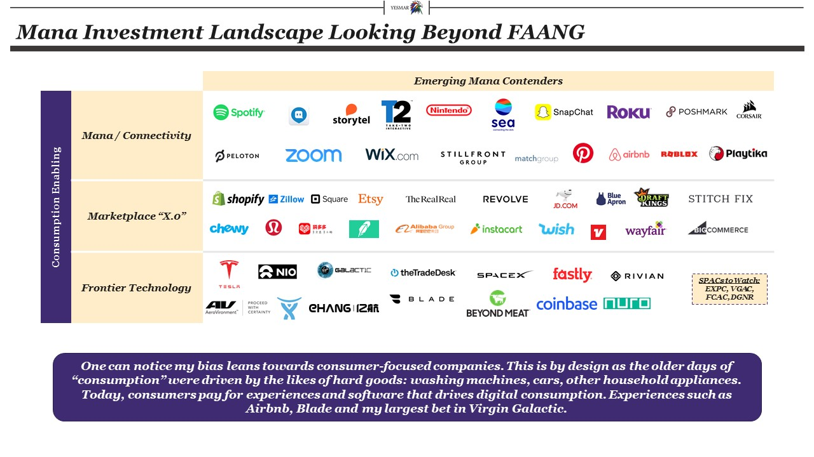

TL;DR: A place that's just for fun, summarizing my macro throughts on the world & technology.
Selected Articles:Why You Should Care About Crypto If You Don't Already, In One Graphic
How Enjin Will Bring my Gyrados Back to Life through my DeFi Wallet
Oct-30-2021

 


Enjin is building an ecosystem which will enable cross-chain gaming, in a true “Ready Player One “ fashion. Gone are the days of putting multiple hours of gameplay in, only for your game developer studio to either shut down the game or remove functionality for your specific in-game asset.
One gamer’s experience with centralized gaming stands out in particular, “He happily played World of Warcraft during 2007-2010, but one day Blizzard removed the damage component from his beloved warlock's Siphon Life spell. He cried himself to sleep, and on that day realized what horrors centralized services can bring.” His name is Vitalik Buterin, co-founder of Ethereum.
A stark comment to say the least. Many of us have experienced this issue, be it a leveled-up Diamond Sword on Minecraft, Ebony Armor on Skyrim, or Porter’s X2 Ray Gun on Kino Der Toten. Centralized gaming sucks, but it’s all we’ve ever had. Until now.
Enjin is looking to bring the power back in the hands of the players, by making your in-game items Non Fungible Tokens that are unique to you and only you. Your armor, swords, potions and power ups are now assets on the blockchain. Upon leveling up a sword, a player can bring that from one realm to another and if they want, melt or list it on Enjin’s marketplace for ENJ denominated value which can then be swapped from ENJ -> ETH & back to fiat for real-world value.
This is the ethos of true “play to earn” which the likes of Axie Infinity, Illuvium and MyNeighborAlice are trying to do, but with major publishing risk. Honestly, these games are not very fun. I think Axie & others helped paved the way for proof of concept for “play to earn” but for players to gold rush into a game like Illuvium with dollar signs in their eyes in order to train an Illuvial just to level it up & sell it on a marketplace seems..nearsighted.
Enter Enjin, whos’ taking on no publishing risk and is acting like “the Shopify for gaming” with their full-stack platform, or in crypto terms, “the Ethereum for gaming”. Developers can get set up with Enjin in as little as 48 hours, with Versatile SDKs, a robust API framework, and development tools to create NFT-powered projects with no blockchain coding experience required. Why have your game developer be both the publisher and the platform enabler? The Wealth of Nations taught us that breaking down & dividing labor is a good thing as it saved industrial time and resources. Only in this case, its saving developer time & can translate into a better gamer experience.
Upon adopting blockchain gaming, devs will have immense network effects that far out pace the economics of centralized economies. Players can level up their items, then sell or trade them on marketplace for ENJ denominated value to which the devs can take a % of sale from. Enjin’s Beam technology also allows for users to scan QR codes to have special NFT drops, which will immensely increase gamer retention in a very simple way that wasn’t possible without blockchain.
The analysis presented shows where Enjin could trade at upon successful execution of their Efinity Blockchain & further AAA game developers onboarding to the platform. I believe there’s immense whitespace opportunity for Enjine to capitalize on “being the glue” that brings together platforms like Roblox, Facebook, Decentraland, Activision and Take Two Games to a whole new level that gamers have been so actively desiring.
An Overview of Facebook's META Rebrand
Oct-29-2021
While many including myself are laughing at Facebook’s rebrand to META, this is a huge sign of validation for the broader web3 industry. For better or for worse, just as memecoins introduce people to what crypto is, Facebook is at the least adding the word “metaverse” to about 2.9 billion MAUs’ vocabulary – and the data shows:
Even if only 1% of those MAUs convert to their Horizon Home platform, that’s still 29 million people engaging in a VR-enabled world, which will eventually cross pollinate into blockchain worlds.
Off the heels of the Ethereum rally which started around the end of September, alt coins as a whole have been on an absolute tear. Pure-Play Metaverses & Supporting Platforms seemed to benefit the most as Decentraland, Decentral Games, The Sandbox & Enjin were all up over 50%, with the broader Metaverse Index (MVI) up over 30% since the October 19th announcement.

Despite Facebook’s $10bn planned CapEx over the next few years & their 2.9bn MAUs, I personally believe the future of interactive technology / metaverse will not be built by bloated dev teams & an infinite balance sheet. It’s going to take skill, passion & nimble leadership, which is why I’d rather bet on the likes of smaller, crypto native players like the ones above. As I said earlier, this is a huge step in the right direction for the broader space, Facebook even got a nice 4% pop on the day of announcement. A lot of institutional ownership & non-crypto native retail will likely add Facebook to their portfolio as a means to get “Metaverse exposure” similarly to how those did buying Coinbase at IPO to get “Bitcoin exposure.”
I’m hopeful & optimistic that this announcement will bring more adoption to Web3, Metaverses & Blockchain Gaming.

Oct-18-2021

Multi-billion dollar industries are being underpinned by the next wave of "Mana" contenders, a select group of them are highlighted in the above landscape..
The focus of this blog going forward will be the proliferation of the Crypo-Economy.
Yesterday (10/4/21), I quit my job on Wall Street to jump off the Crypto deep end with a goal of bringing this community further mainstream via my TradFi niche.
As exponential as the growth has been over the last 14 months, we’re still FAR FAR away from a substantial amount of the population adopting Crypto & the broader blockchain ecosystem. Coinbase’s IPO brought our name into the limelight, and NFT art is driving the cultural validation behind Crypto but concepts like DAOs, Metaverse and even Yield Farming are too arcane for most (i.e. I wouldn’t expect my 50 y/o mother to open a Coinbase acct, buy ETH, open a Metamask, then link her Metamask to mint a Cryptokitty (all the while paying 100% of the mint’s value in gas?)) – we have a fundamental user accessibility & knowledge problem….for now.
I recently submitted by proposal to join the Mirror DAO which you can see here (LINK) -- Lets see where this takes us!
I have no hidden agenda, I'm simply here to help educate others and share institutional-grade content. Thank you all for the time, let's build.
Why You Should Care About Ethereum if You Don’t Already
Oct-17-2021
I spoke with a well-regarded colleague of mine about the Crypto market as a whole, we discussed the cool things like NFTs, Metaverse and the proliferation of DAOs. But it struck me that although these “headline topics” have become a part of the mainstream part of discourse, there is still a huge knowledge gap of how these technologies are developed and what the drivers are of them. In this piece, I dive into a surface-level introduction of what Ethereum is and why you should care about it.


Note that none of the above headlines would be possible without Ethereum. Ethereum is the electricity for our lightbulbs per se. It’s enabled the $40bn DeFi market, the ~$10bn in YTD NFT trade volume and is what’s fueling the growth of web3.
Q3 Portfolio Update
Oct-02-2021

Here’s a quick snapshot of my portfolio at this instance in time. On the equity side, I have a heavy affliction towards eCommerce and goods marketplaces. Covid brought about a step change in demand for eCommerce and the pie is only growing bigger as retail eCommerce is expected to be a $6tn industry by 2024.
Generally, I have three investment parameters: Electric Vehicles / Advanced Transportation, Frontier Technology (Space Economy, Landscape Changing Software), eCommerce (all things driving the internet’s GDP) and Digital Media / Connectivity. These three industries are underpinned my massive macro tailwinds coming off covid, but also into the future (i.e. shift towards digitalization, unbundling of the vehicle and space as the next frontier).
On the Blockchain / Crypto side, I feel like I am learning every single day. DEXs remind me of marketplaces, social token platforms and NFT gaming are replacing the old guard of the likes of Facebook, Spotify, Activision Blizzard etc. This is by far the most exciting portion of my overall portfolio and currently only represents ~8% of total exposure.
I’m excited to continually invest in the future of DeFi & Web3 as I have a 7-10 year timeline.
Sizing The Vehicle Renting & Sharing Opportunity
Sept-26-2021


The U.S. auto industry sold a little over 3.4 million cars in 2020.
That year, total car and light truck sales were between 14 and 15 million in the United States.
U.S. vehicle sales peaked in 2016 at roughly 17.5 million units.
This exact trend is what's driving two key things: decreased car ownership & a shift towrds the "modularization" of vehicles (i.e. electric, compact, efficient (gone is the sould of the American V8 (or my personal favorite, the E92 BMW M3)))
With Robotaxis on the scene, and car sales fllaing, it begs the question as to who will fill the void when consumers need wheels to get from SF to LA, SF to Monterey, Marin, Yosemote? Why pay for Parking, Insuracne, Gas, Maintenece? All so that your car can sit idle for 96% of the time when it isnt used?
Enter first GIG and now Kyte on the scene. These platforms are matching drivers with wheels so they can "Get in and Go" (GIG). Sure, Robotaxis aer coming, but to say that 100% of cars will be off the road by 2030 is a far cry. Kyte and others are bridging that gap towards low / no vehicle ownership, while paving the way to AVs.
My Crypto Hello World
Sept-16-2021
I had first opened a Coinbase account in 2017 to buy a fake ID with my old college buddy. I just recently reactivated the account, and saw that I had a GDAX & Binance account as well. The accounts unfortunatley had only a deminimis amount of money! (Sigh). Anyways, it's 2021 now and I've been inveting nearly every investable dollar into the broader Cyto market as a whole. More more more to come on my general portfolio management strategy next.
We've recently seen the DeFi Summer with Apes emerging as an asset class, the prolferation of the "Metaverse" NFT based communities and insane yield farming.
Just taking a look at Bitcoin as a multiple of Gold, we're about 11x smaller than the Gold market, which is a proxy of what BTC can be once it reahes steady state as a true store of value.
It would be amazing if BTC is adopted as a true virtual store of value as opposed to gold, Ethereum become what the internet / wifi is of DeFi and Web3, and the evenetual PoS platforms to become the Apple, Amazon Googles of Web3. What a thought.

The above highlights some interesting protocols and KPIs I've found useful to benchmark..it's stark how early we all are (even still) to this new wave.
2020 Performance Summary
Jan-31-2021

2020 has been an unreal year for the books. I'm happy and humbled that I've been able to stick to my investment philosophy throughout the Covid crash, GME bubble and everything in between.
My new strategy upon making a new investment is to buy long term OTM options for the company I'm looking to value in 3-5 years. If the fundamental premise of valuation is that of discounting future cashflows 3-5 years from now, there is no reason intraday, or even monthly swings should bother me. This option strategy will help me juice return without having to employ the use of leverage.
A macro thought on the future of my investing philosophy: I want to position myself to reap the benefits of the “experience based economy.” Experiences – as in real life experiences, not digital ones. Experiences that Blade, Airbnb, Virgin Galactic and others can bring. Gone are the days of “consumption” of hard goods to derive joy. Consumers today care about experiences that are finite, but last infinitely in their hearts and minds.


The Wix & BigCommerce Bull Thesis & eCommerce as a whole: “The transition from physical to digital commerce constitutes one of history’s biggest changes in human behavior, and the pace of change is accelerating. According to eMarketer Inc. (“eMarketer”), retail ecommerce was nonexistent in the early-1990s and grew to approximately 10% of all global retail spending in 2017. They predict it will take just six years for this percentage to more than double to 21% of global retail spending in 2023” Shopify certainly can’t take all of the eCommerce market. Just as Tesla can’t all of the EV market. There are so many middle market companies who either sell exclusively through retailers or have antiquated webcarts that need to transition to centralized, well built eCommerce hosting platforms that offer their management teams the ease and flexibility of a SaaS platform.
Amazon is one channel, a very specific channel, but as the CEO of a company my bank is engaged to sell noted, “Webcart is the future. We have complete autonomy, creative control and it’s the highest gross margin channel for us. We are certainly committed to building out our webcart sales.”
Covid nailed the coffin shut for retail as consumers have been forced to either buy completely online, Amazon or “buy online and pickup in store” – these tailwinds will last far into the future. I’m not a retail bear, I’m just bullish on eCommerce being the future of consumption due to how easy it is to buy online rather than lugging yourself around a car to get to Target. This precipitated a significant shift in shopping behavior from offline to online. In June 2020, eMarketer predicted that U.S. brick and mortar retail spending will decline by 14% in 2020, whereas U.S. consumer ecommerce spending will increase by 18%, the highest growth rate since their coverage began in 2008.
WIX is also a bet on the future of the “no code” software development cycle and the democratization of app building. Couple that with content creators popping up left and right and I think there are levers to pull for post covid growth from WIX.
.......At a macro level, this is how I think about the world.
Spotify's Unique Problem: Monetization
Dec-4-2020

320 Million Monthly Active Users and 144 Million paying subscribers – myself proudly included. Spotify has a treasure trove of users, their listening habits, preferences and tastes all in one mainly mobile app. It’s waiting to turn on the money making machine and extract both their user’s time and digital media consumption. Spotify can pull levers for growth by investing in: Original Content, “Shopifying” the artist experience and through a slew of multimedia offerings.
Spotify was founded in 2006 and 14 years later, they have become the leading platform for music streaming. But it shouldn’t end there. Spotify should further add original content offerings to become a discovery platform, which happens to be the market leading music streaming service at the same time. Spotify has already started with podcasting, adding the Joe Rogan Experience and Michelle Obama podcasts under Spotify’s exclusivity. These are investments in original and exclusive content that will keep eyes and ears on the platform. Video capability was also a transformative addition to the JRE Podcast that no other podcasting service offers, with exception to Youtube when his shows were there.
Spotify is also investing in multimedia, partnering with DC Comics to bring Batman Unburied and unveiled and E-sports partnership with Riot Games’ League of Legends as well as Chernin Entertainment to develop the owned podcast IP into film, television, and digital series projects. All in an effort to attract and reward podcast creators. This investment in both podcasting and video on demand is what will bring more eyes and ears onto the platform. The next logical step would be live events: think MMA, concerts, Travis-Scott x Fornite-like events as well as even a Periscope like feature for artists to connect with fans. Building a multimedia flywheel with music at the core of the offering will be key in both keeping and growing marketshare.
“Shopifying” the artist experience. It’s hard enough to become an artist as well as launching an e-Commerce site. Building artist tools will create a two sided marketplace: for consumers and producers of digital media. Spotify has already partnered with Universal Music Group to help build out new tools and offerings, creator teams to connect, create, and grow their audiences on the platform
- The investment in promo cards, which are a new tool that allows creators to make shareable social media assets for songs, albums, podcasts, and artist profiles is a great inroad. The company has also built Spotify Analytics — a data tool for labels and distributors — into Spotify for Artists, to establish one unified fan development platform for the music industry.
- Artist fundraising, like Shopify’s SMB loans are a way to better support artists to amplify their fundraising efforts on their Spotify profiles. Additionally, in September Spotify launched support for artist teams to promote their virtual events on their Spotify profile and our Concerts hub, spaces that previously only featured in-person events.
Airbnb Pre-IPO Key Takeaways
Dec-4-2020

A new category of travel, synonymous with “Google It” is now “I’m going to Airbnb it for the weekend”. The peer to peer gig economy has exploded over the last 10 years with the likes of Uber, Lyft, Fiverr and now Airbnb going public. The question remains: will growth continue as a public company entering maturity, or is there still significant upside potential to holding shares in Airbnb.
Sure, Airbnb has been hit by Covid, but with vaccines looking promising, there’s no reason why by Q3 2021, bookings and revenue will normalize and for Q3 2022 – revenue can’t skyrocket YoY back to pre-pandemic levels.
Travel is one of the world’s largest industries, and its approach has become commoditized. The travel industry has scaled by offering standardized accommodations in crowded hotel districts and frequently-visited landmarks and attractions. This one-size-fits-all approach has limited how much of the world a person can access, and as a result, guests are often left feeling like outsiders in the places they visit.
In early 2020, as COVID-19 disrupted travel across the world, Airbnb’s business declined significantly. But within two months, our business model started to rebound even with limited international travel, demonstrating its resilience. People wanted to get out of their homes and yearned to travel, but they did not want to go far or to be in crowded hotel lobbies. Domestic travel quickly rebounded on Airbnb around the world as millions of guests took trips closer to home. Stays of longer than a few days started increasing as work-from-home became work-from-any-home on Airbnb. We believe that the lines between travel and living are blurring, and the global pandemic has accelerated the ability to live anywhere. Our platform has proven adaptable to serve these new ways of traveling.
The business is resilient, it can quickly dial down fixed costs (laying off 25% of their staff – and I’d bet they would gladly come back to work too). It has a strong brand loyalty, it is better perceived not necessarily better suited for pandemic and post pandemic travel than hotels as people are traveling within driving distance, are staying longer, prefers non-shared accommodations such no as a shared apartment or hotel room, and are spending more. Finally, it’s a win-win proposition: need extra income? Rent out a room or extra property. Want to travel? Get a room in someone’s place or a full apartment.
Unlike many other two-sided marketplaces, traveling is not a “trend”. It’s been with humans forever and as the pandemic shows, not even a deadly plague stops people from wanting to travel.
Based on the private market valuations, at $35bn, this is fair value, however I believe that the IPO will be oversubscribed to and in the short term won’t make sense to purchase. However, over the long term I’m bullish on the business as well as investments the company has made in tailored experiences and international expansion.
Going Beyond...
Nov-31-2020
Beyond Meat is at the forefront of a cultural shift towards healthy, sustainable and clean eating. The company has strategically partnered with some of the largest fast food and quick serve restaurants in the U.S. and globally. This gives first time consumers a "gentle introduction" into plant-based alternatives.
Beyond Meat also has the culture on their side. In October of 2017, Leonardo DiCaprio announced his status as both an investor in the company and a public advocate for the brand. This brings immense goodwill towards the brand which will help propell the moated brand Beyond has as well as help convert first time customers, which is such a crucial part of the business.
Further diligence will be required to assess the viability of an investment opportunity. Personally, I've had an impossible burger (Unami Burger and Whalburger in SF and Palo Alto) and they taste fine with me. It might be an issue that Beyond is targeting fast food / QSR establishments, but that comes with more sales exposure (as opposed to smaller mom and pop shops like it seems that Impossible has a larger foothold in.
The October 2019 PG&E Trade Summary
Nov-8-2020
PG&E came into play, hitting an all time low of $3.8 after sparking fires in Northern California. Shares were acquired at an average price of $6.86 and sold at $10.75.
Super Size Me ... Or Maybe Not?
September-7-2020

This analysis was inspired by watching "The Founder" - the story about Ray Kroc and the McDonald family. It showed the relationship between the two and eventual fallout, a tragic yet optimal outcome for the McDonald family, but it was what needed to happen.
This made me think a lot about the fast food industry, and business as a whole. The flywheel above the chart shows how mission driven businesses start "focus on quality" MCD in the beginning (the speedy -system and a focused menu [only burgers and fries as well as non-powdered milk shakes]). Fast forward towards McDonalds today, and we see cost cutting across the board (powdered milk shakes), chicken sandwiches, fish fillets, chicken tenders, and now impossible burgers…. or eventually. If you watch the movie, Dick McDonald made it a point that when McDonalds franchised their franchisees would deviate from the menu, cuts costs and quality fell as a result.
Parallels between In and Out today and McDonalds in 1955 are stark when comparing the two. Think limited menu, emphasis on the speedy system and quality being the #1 ingredient.
What does this mean for strategy & business as a whole? Scale brings problems that question the fundamental truths a business & mission were built on. Think Uber & Lyft – they wanted to make something different, a different experience, a rider centric approach. Fast forward 10 years later, they’ve been hit with regulatory burden from hubs like SF & NYC with a medallion system very similar to that of which Uber was trying to combat in the first place. The same mission that In and Out, Shake Shack and Five Guys build their businesses on (de-commoditizing the burger).
It’s no surprise that In and Out and McDonalds are polar opposites on nearly every measurable metric. So super size me, but at your own risk.
Old World Boeing Is Now New World Amazon
August-3-2020

Consider Google's R&D Spend in 2013 which was $7bn, come 2019 it's increased 270%+ fueled by M&A, in house moonshot projects and internet in Africa. Tesla
Boeing, the staple of America: *The* Aerospace & Defense Leader, employs 153,000 people as of 2019, whereas Amazon blows that out of the water with nearly 8x more, sitting at 840,000 employees. The new world rewards challengers who confront the status quo and more often than that, they're companies who truly leverage technology witin their respective industries.
So is there infinite demand for technology services? Well if you're Google and you own search, ads, google drive, Nest... I could go on forever - yes it seems like there is no end in sigh for Mega Cap tech services given thei diversification, unless they're probed from Congress as we're seeing this week - but that hasn't even had a material affect on investors perception of the companies.
Not to mention the fact that FAMGA has emerged from the COVID Crisis with parabolic movements from their stocks... tech is the new hedge, source of Alpha and preferred investment allocation.
Q2-2020 Portfolio Update
July-21-2020


A further in-depth analysis on buying puts on the SPY is to come next, focusing on the drivers of what a Trump-Reelection would look like, the state of COVID-19 in 2021, The American Consumer, The Federal Reserve and an Entry / Exit Model.
Working Price-Weighted Mana Index
May-24-2020

The idea of an index is to track a slew of securities that fit a certain criteria. In this case, I'm tracking the current portfolio holdings, but in the future I would like to track the values of the emerging & incumbent mana contenders.
The question for me is: Price Weighted (Dow Jones) or Market Cap Weighted (SP500). Both have drawbacks when including mega cap FAANG names as with the market cap weighted index, Apple would dominate the movement, while with the price weighted index, we see that Amazon is dominating the price movements.
An ETF that holds portfolio weights is probably the best medium for an index tracker since the aggregate price movement of the index is primarily driven by the % of asset allocation rather than price or market cap.
My next project is to create a price weighted index pulling companies from the Mana landscape in real time via Yahoo Finance APIs to show on the header in real time.
Unpopular Opinion: Technology Is A Tool, Not A Business Model
May-23-2020

Despite my start within TMT and Industrials Technology Investment Banking, this took me a while to understand. Technology is a tool, not a business model.
There is no such thing as a "technology business" - only companies that leverage technology, such as in the case of Tesla, improved battery metrics, autonomous hardware and software as well as advanced manufacturing processes.
This thought process can be applied to any industry, which is what results in the emergence of 'FAANG' = Facebook (an internet business that leverages big data and machine learning to improve friend networks, and newsfeed - supported by an ad-based model), Apple (a computer and phone designer that leverages design technology, cloud computing and other software-based developer tools) - pinned up by an app store ecosystem, hardware sales and a growing subscription revenue platform, Amazon (a logistics / e-Commerce company that levereages machine learning to give you the best product reccomendations, enable 2-day shipping and optimize warehouses through robotics) - supported by e-Commerce sales and Prime Subscriptions, Netflix (originally a content aggregator and DVD subscription service, leveraged machine learning technology to give users content reccomendations) underpinned by subscriptions and is now investing in Netflix original content and finally, Google (a true internet company that build the foundation of search, but is leveraging AI, Machine Learning and nearly every other kind of technology to add to their many business lines, Waymo, Stadia, Search, Fiber and Nest) - underpinned by an ad word and search business.
Now let's get into some 'tech businesses' - the most recent example of this is the explosion of autonomous vehicle startups such as Peloton Trucking, Drive.ai, UberATG, Baidu, Aurora, ZOOX, Nuro, Cruise by GM, DeepMap, Starsky Robotics, Argo AI, Tesla AVs, Waymo - I could go on forever...
A slew of the names I mentioned before started by raising inordinate sums of Venture Capital, in order to fund what were essentially expensive research projects (go scientists) - because they had no underlying business model in conjunction with the technology development.
It seems like the ones who are winning the AV race are the well capitalized companies that have underlying businessmodels with healthy balance sheets, cash flow conversion and access to capital markets ex: Waymo, Tesla, Aptiv etc.
I belive there needs to be an underlying business model before the introduction of buzzword technology that will help support the beforementioned business.
Working Mana Dilligence Checklist
May-22-2020

Mana can be found within all consumer apps, which I still need to build a complete landscape for. However, there is immense value to Enterprise SaaS companies that fix major pain points for enterpise users with long contract values that promote sticky products, which result in high cashflow conversion and even higher Revenue and EBITDA multiples.
New Investment Opportunities Among Covid-19 (1/2)
May-16-2020
February 21st, the SP500 was at $3,337, upon the Coronavirus sell off, we hit a low of $2,237 on March 23rd (ironically) – shaving off 32% in under a month.
Come May 16th and the SP 500 closes at $2,863, a 15% drawdown – yet we’ve seen record unemployment numbers over the last eight weeks with about 36.5 million people filing for unemployment insurance, pushing the rate to an unprecedented 17% - levels we haven’t seen since pre-WWII and the 1929 Great Depression..
...Yet stocks are rebounding as indices are broadly up since their March 23rd lows...
It seems paradoxical to say that a lot of the opportunities I’m eyeing are ‘overbought’ as we see that Peloton has swept tailwinds from the exercise from home trends, regardless of sales have increased to the point where it justifies an 88% share price gain on the year. As a matter of fact, all companies that I’m eying are up 20%+ unless they have a retail footprint such as Revolve and The Real Real (down -60% & -56% respectively).
But this isn’t an essay about the macro economy as a whole, or the misnomers of the market, its an analysis on some future opportunities that: at a high level 1) fit the Mana mandate, 2) are good businesses to invest in once valuations are more attractive, and 3) will require more diligence (specifically the ones with targeted in red) on an investment opportunity.
A note on portfolio management: I don’t need to invest in these new companies either, there will be a limit for my independent research capabilities, however being able to silo my investments in a theme help consolidate the general research I’d need to do for companies like Shopify, Chewy, Revolve etc.. But again, I don’t need to invest in these companies – it just adds more work on my end eventually.
I had the fortune to not look at my portfolio during the depths of the pandemic (mainly because I had no cash to invest) but now that things are looking better, I might look to add more to my positions – or double down on my frontier investments that have been hit the hardest.
Part 2 will come with an indepth reveiew of the selected opportunities.
Urabn DADUs, A New Approach to Neighboorhood Building
May-15-2020


TBU
What Will The Future Of Investment Banking Look Like?
April-22-2020
With interest rates at record low levels, the question for managers arise: Buy, Build or Partner? This then raises another question: How will we fund the choice we make? Through Debt or Equity? If you ask a Boutique Bank, a majority of their answers will point towards equity as they don't have a debt desk and look towards the advisory fee. So then for managers, they must decide: hire a boutique bank with sector expertise and thought leadership? Or hire a full-service bulge bracket bank that can provide staple financing - if needed. Of course this is simplifying the process, but the point still stands.
Do we chalk up Investment Banking success to rainmakers at the firm? Incentive packages through stock and options? Higher deal fee splits? Or Merging let's say a Jeffereis Group with a Stephens Inc. to create a JeffereisStephens Group - which will equate to a firm that has enhanced Capital Markets capabilities, a stronger balance sheet and a larger deal making team to spearhead a larger fee pool. Arguably enabling two Middle Market firms to compete within the larget Bugle Bracket category.
What goes to say for independent M&A Advisors such as Centerview, Moelis, LionTree, FT Partners and PWP? All of the likes started with similar rainmakers defuncting from their bulge bracket homes to create a more nimble, independent advisory firm. When these founders leave the babies they created - what will become of their brands and the franchises they sought to build? For one thing, having a name that is founder agnostic might help. But without pursuing diversifed revenue streams, these businesses might falter in the future.
Or they could become the likes of a Lazard, legacy advisory shop, founded in 1848 and commits to pure advisory services..

Investment Banking is no different than any other industry. Scale, Revenue Growth and Margins are essentials to business and when one goes public, pressure is put on to maximize those metrics above. The most recent wave of consolidation has come from the merger of Piper Jaffray and Sandler O'Neill as Piper Sandler Companies. The resulting company represents one of the broadest full-service investment banking platforms on Wall Street complemented by one of the largest securities distribution and trading franchises with leading market research aligned to serve the middle-market.
So maybe we will see an eventual JeffereisStephens Groups, or a RaymondJefferies Group...
2020 Is Looking To Be A Lost Year
April-20-2020

Policy makers struggle to balance opening the economy, flattening the curve and the mounting death toll in the U.S.A.
Mandate: Provide exceptional returns through investing in publicly traded growth technology stocks for long-term capital appreciation and short-term gains when appropriate through event-driven strategies.
Updated: April-18-2020
 

Virgin Galactic Is Speaheading Commercial Space Travel For The Masses
April-18-2020
Virgin Galactic is an interesting play because they fit right into this lens I'm trying to analyze industrial companies in: High Margin, Technologically Advanced, American Manufacturing with prominent leadership – Virgin has all of this. This business is reminiscent of Tesla in the early days. We entered this investment around February and have been taking hits from their speculation as well as the damper from the CoronaVirus.
With respect to their TAM and opening this up to the masses, I feel there is a fundamental business of selling the space experience here. $250k is not that much to spend on a one in a lifetime event like this. Imagine a Kardashian live streaming from space, or someone live streaming the first trade from space, the first MMA fight from space etc..
At the core, Virgin is an entertainment company and Branson is using Space as a platform so sell experiences.
Real-Time Vertical Integration Enables Extreme Moats, With Monopolistic-Like Market Structures
April-17-2020
Facebook, the largest social media platform has acquired, or outright copied competing platforms, as you can see below:
- April 2012: Facebook Acquired Instagram to appeal to a younger crowd
- To Snap’s demise, Evan Spiegel reportedly turned down an acquisition offer from Facebook in late 2013
- August 2016 rolls around and Instagram adds Stories to the platform, Snapchat’s defining feature
- In the mean time, Persicope was founded in March 2015, a platform for users to live broadcast themselves to people who tune into their periscopes
- Facebook introduced Instagram Live Stories in November 2016 – which was Persicope’s defining feature: a smaller company again had their defining feature stolen by Facebook – not to say that any company ‘owns’ a piece of software – it’s software for god’s sake
- VSCO has failed to scale as people truly like ‘likes’ and numbers on their impressions – is there room for a platform to scale without the use of likes and followers? TechCrunch cites that in the midst of the CoronaVirus crisis VSCO has laid off 30% of their workforce
However, It seems like FinTech startups have rose up in the face of incumbents (Cash App’s rise because they serve the underserved areas/segments?! – a snippet from Jack Dorsey on the Joe Rogan Podcast) – all this success in relation to Venmo, ebay, Paypal, VISA, etc… Fintech might be a new vertical to analyze...
An Analysis of the Whole Foods / Amazon Business Combination
March-30-2020


This analysis was done for an Investment Banking Competition done in my Senior year of College. We were finalists, but didn't bring home the gold.
Feburary 2020 Market Update: COVID-19
Feburary-29-2020
Feburary 29th, 2020: Markets Enter Correction Territory, as Supply Chains are Shocked from Corona Virus Outbreaks, however over the long term, The Status Quo of 'Designed in California, Made In China' will remain. This presents a very unique buying opportunity for name brands.
The Streaming Wars: A Spotify / Apple Business Combination
October-27-2020

This sure takes me back to one of my first original pieces. A pitch I made in an interview at a very special Investment / Merchant Bank. Didn't get the offer, probably becasue of how whacky the idea was and the model itself, but it was a great exercise nontheless and I love pitching original ideas.
I think this is what started my obsession with Spotify's business.